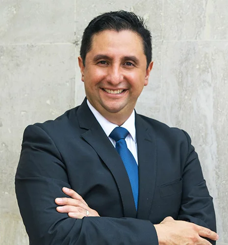

Contabilidad y Cumplimiento Fiscal
Información financiera clara y atención a sus obligaciones fiscales.
San Pedro Garza García · Nuevo León
González Armendáriz
Contabilidad, auditoría y asesoría fiscal para tomar decisiones con mayor claridad.
Agendar una consulta01 / Servicios
Información financiera clara y atención a sus obligaciones fiscales.
Evalúe sus decisiones y reduzca riesgos dentro del marco legal.
Mayor confianza en la información que utiliza para decidir.
Convierta sus preguntas de negocio en prioridades de acción.
Apoyo en facturación, tesorería, cobranza y otras tareas de su operación.
02 / Por qué elegirnos
Más de 28 años de experiencia respaldan a la firma.
Contabilidad, fiscal, auditoría y administración dentro de una misma oferta de servicios.
30 colaboradores y más de 400 empresas respaldadas.

03 / Liderazgo
Una firma para acompañar las decisiones contables, fiscales y de negocio de su empresa.
04 / Preguntas frecuentes
Sí puede solicitar una conversación para revisar una necesidad específica de asesoría o auditoría. El alcance y la coordinación con su equipo se definen antes de contratar.
Depende de la decisión o dificultad que necesita resolver. Comparta su situación y el servicio que considera relevante; la consulta permite revisar el alcance adecuado.
En San Pedro Garza García, Nuevo León, dentro del área metropolitana de Monterrey. Encontrará la dirección completa al final de esta página.
Los honorarios dependen del servicio, el alcance y la información de su empresa. Solicite una consulta para revisar su necesidad y conocer las condiciones de una propuesta.
Complete el formulario con su nombre, empresa, teléfono y servicio de interés. También puede comunicarse por teléfono o WhatsApp. La cita queda sujeta a confirmación.
05 / Contacto
Dé el siguiente paso con una conversación sobre su situación y sus prioridades.
28+ años de trayectoria · 400+ empresas respaldadas
Av. Lázaro Cárdenas #2400 Pte.
Edificio Losoles · PB 18
El mapa se carga desde Google solo al solicitarlo.